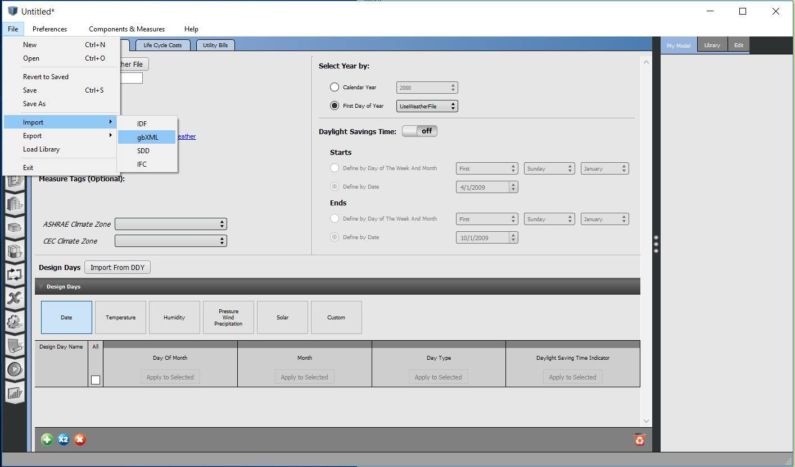
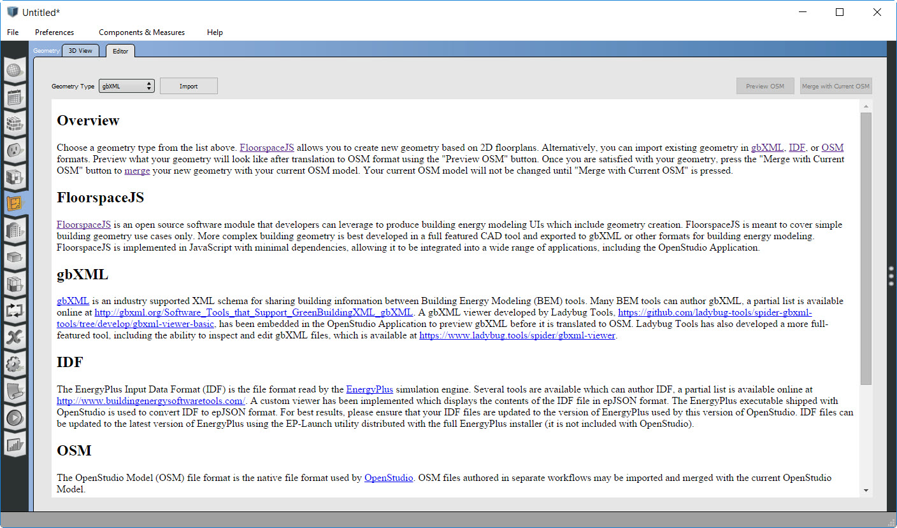
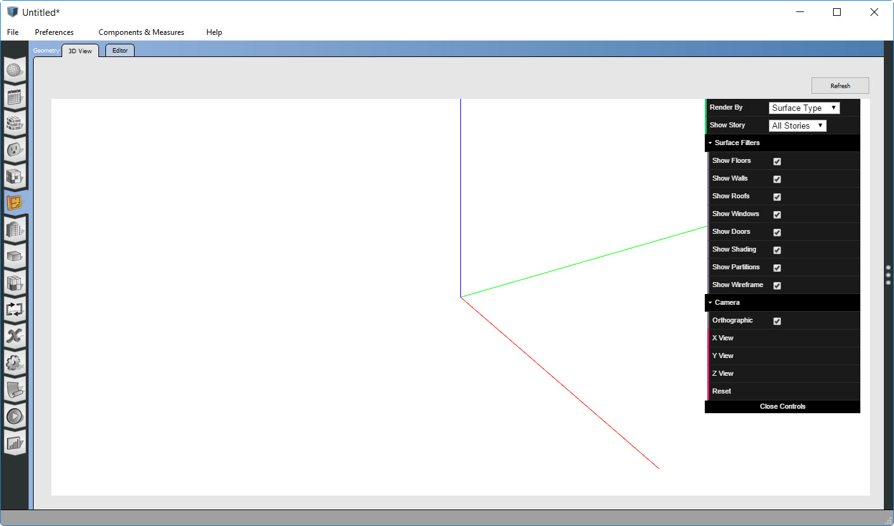

Working with gbXML
Import gbXML
gbXML is an industry supported file format for sharing building information between disparate building design software tools. The OpenStudio Application can import and export gbXML files through the File->Import and File->Export menus.

The File->Import method creates a new OpenStudio Model from the imported content. This is useful for creating an initial OpenStudio Model from a gbXML file. However, this method is difficult to integrate in iterative workflows as described below:
- Architect sends Engineer a gbXML file for initial building geometry
- Engineer converts gbXML to OpenStudio Model and assigns schedules, loads, and HVAC equipment
- Architect sends Engineer an updated gbXML file with new building geometry
In this example, the Engineer does not want to discard all the work they did in step 2 and repeat it all over again with the new building geometry. Instead, the Engineer would like to merge new geometry from the updated gbXML file with their current OpenStudio Model. The geometry editor tab in the OpenStudio Application supports this iterative workflow. The example below demonstrates this process with gbXML, the geometry editor tab also supports importing and merging geometry data from IDF and other OSM files.
Import and Merge gbXML
When first going to the geometry editor tab, choose the type of geometry file that you want to import. Select gbXML from the Geometry Type menu, press the Import button, and browse to the gbXML file you want to import.

After importing the gbXML file, you can preview the gbXML geometry using the Spider gbXML Viewer. This viewer is based on ThreeJS and is developed by Ladybug Tools as an open source tool which has been integrated with the OpenStudio Application. The viewer is also available as a standalone online tool.

The gbXML file can be inspected and checked for errors. However, at this point the geometry from the gbXML has not been imported into the OpenStudio Model. If you go to the 3D View tab you will see that there is no geometry in the OpenStudio Model.

Geometry from the gbXML file is not brought into the OpenStudio Model until the Merge with Current OSM button is pressed on the geometry editor tab. After pressing this button, you will see geometry present in the 3D View tab.

After this point, detailed HVAC and other parameters may be set in the OpenStudio Model. If new geometry becomes available in gbXML format, the user can go back to the geometry editor and re-import the new gbXML file. The new gbXML file can be inspected using the Spider viewer and then merged with the current OpenStudio Model. The OpenStudio Model merge process is relatively new and does not currently have user defined options to control how the merge is performed. In the future, options (e.g. keep thermal zoning from the OpenStudio Model or from the gbXML) may be exposed to give the user more control.